1982-1992
leírás
A 3. generációs F-body nagy változáson ment át. A Firebird 227kg-al lett könnyebb, kisebb is lett méretben ezért, hiába
jött gyengébb motorokkal eléggé jó ereje volt. Ráadásul a radikális re-dizájnak köszönhetően a légellenásása .32 C
d
ha nincsenek az előbukó lámpák fent (ez a .32 C
d annyi mint egy 2013-as Porsche 997 GT2). Ebben a 10 évben 3 ráncfelvarráson
ment át viszont 4 különböző első lökhárító dizájn volt.
motor opciók
- 2.5 L Pontiac I4 (1982-1985)
- 2.8 L GM V6 (1982-1989)
- 3.1 L GM V6 (1990-1992)
- 3.8 L Buick Turbo V6 (1989)
- 5.0 L Chevrolet V8 (1982-1992)
- 5.7 L Chevrolet V8 (1987-1992)
modellváltozatok
- Firebird Trans Am
- Firebird SE (1982-1987)
- Firebird Formula (1987-1992)
Kialakítások
- 2 ajtós Liftback
- 2 ajtós Kabrió
eredeti motor opciók
A Firebird prototípus fázisában, Pontiac V8-asokkal akarták gyártani. Ez így lett volna míg GM (General Motors) bele
nem szólt 1981-ben a "Céges Motorok" bevezetésével. Pl. lett volna Turbo Trans Am, a 4.9L-es turbo V8-al.
Végül csak egyetlen Pontiac motor volt kapható: a 2.5L-es Pontiac I4-es "Iron Duke", 92-88 lóerőre volt képes.
Recaro Trans Am
1982-ben Pontiac árult egy Trans Am opicót amely 2,968$ (mai árfolyamban 2,725,015 Forint) volt ami a Trans Am árát 31%-al
megmelte. A Smokey és a Bandita által elterjedt fekete-arany színben jött, arany "Turbo Cast" kerkekkel, Recaro üléssel,
T-tetővel, WS6 teljesítmény csomaggal (jobb irányítás és hátsó féktárcsák az alap dobfékek helyet) és kérhetted vagy
az LG4-es 5.0L-es Chevrolet V8-al, 4 sebbeségés manuálisal vagy az LU5-ös 5.0L-es Chevrolet dubpla karburátoros V8-al,
3 sebbeségés automatával. 1982-ben csak 2,000-et csináltak belőle és utána még 1984-ig gyártották.
MSE Trans Am
1982-ben
Knight Rider
1982-ben rendező Glen A. Larson a Knight Rider című sorozathoz kért 4 fekete Trans Am-et amiket a stáb
átmodifkált a sorozat egyik főkarakterévé, a beszélő feket Trans Am KITT-é. Ez a második legimsertebb megjelenése
egy Firebirdnek képernyőinken és még mindig vannak lelkes követői a sorozatnak. A sorozat nem emelte meg anyira
az elkelt Firebirdek számát mert nem tettek sok megejtést az autó kilétéről max egypárszor "fekete Pontiac"-nek nevezték
de azt is abbahagyták egy idő után a sorozatban mert emberek bementek Pontiac üzletbe, hogy megvegyék a Knight Rider kocsit.
utána csak "fekete T-tetős" meg hasonlónak nevezték. a sorozatból csak 4-5 autó maradt fent a többi forgatás közben összetört
vagy a sorozat végén bezúzták egy megállapodás miatt.
Daytona 500 Trans Am
1983-ban a Firebird lett újra a Daytona 500-as
"Pace" kocsi. Ezért Pontiac adott egy külön
csomagot ami egy replikája volt a Daytona 500-ban használt autóknak.
15. évfordulós Trans Am
15.
20. évfordulós Trans Am
20.
Firehawk
Firehawk
Képek
1982-es Firebird SE
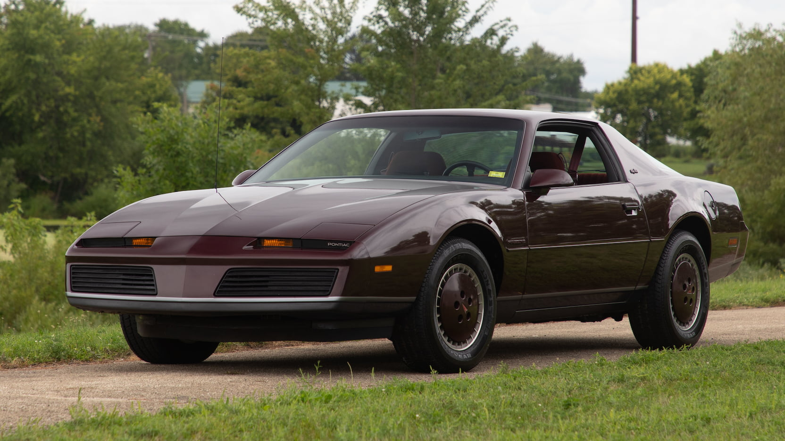
1982-es Recaro Trans Am
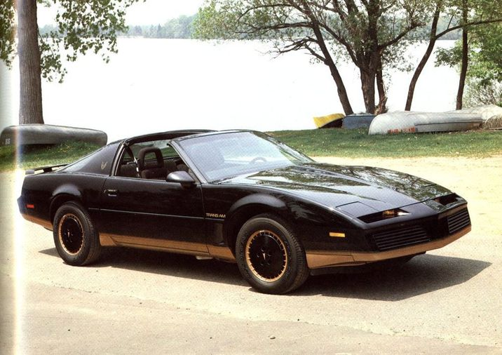
1982-es MSE Firebird
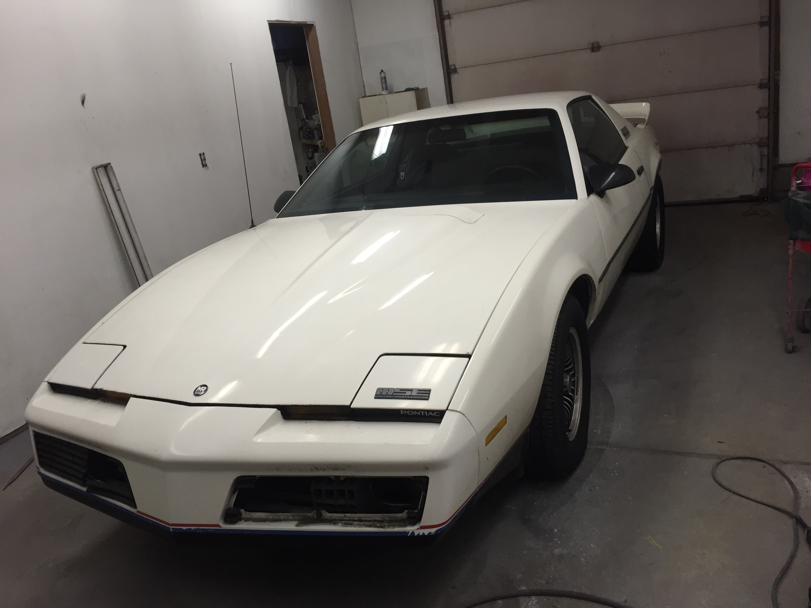
1983-as Daytona Trans Am
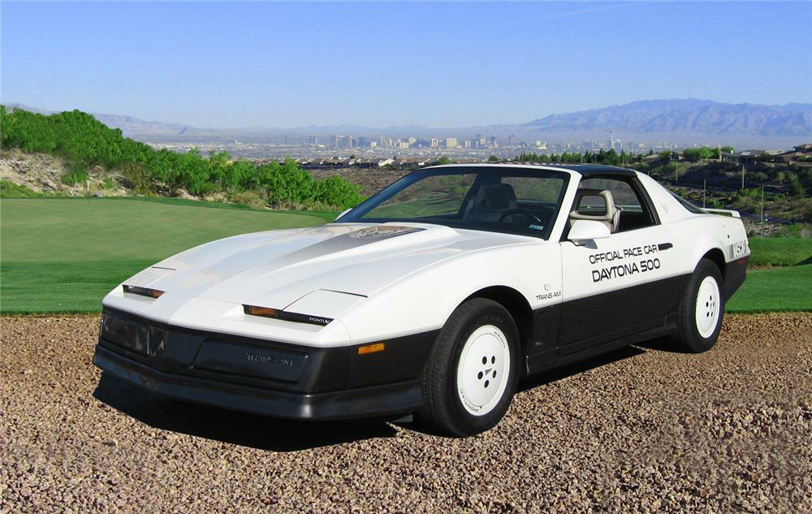
1984-es 15. évfordulós Trans Am
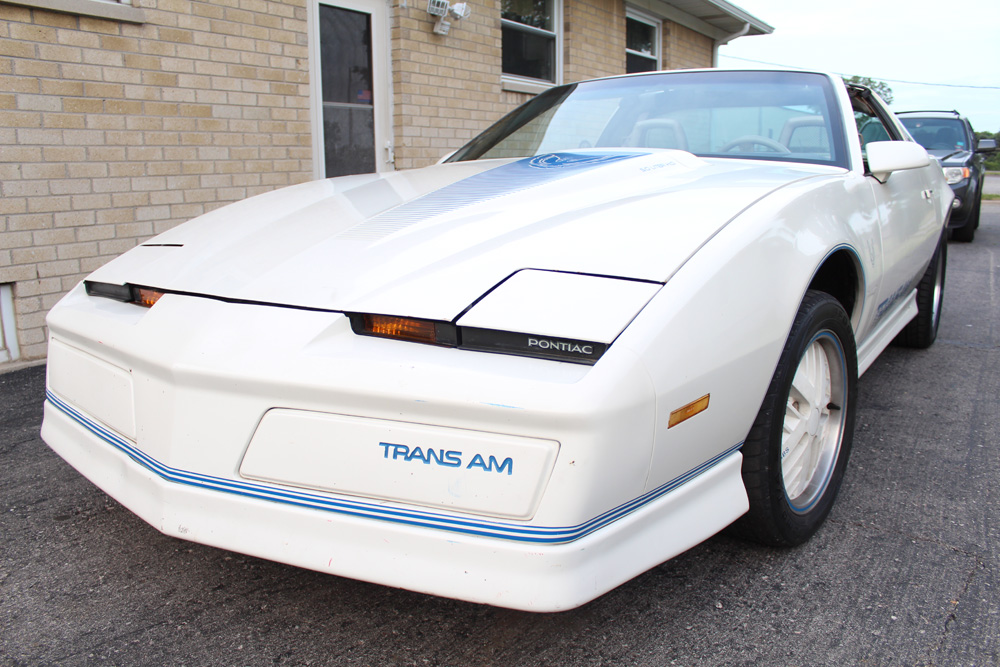
1985-ös Firebird
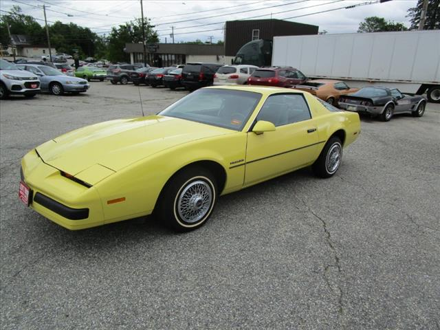
1985-ös Trans Am
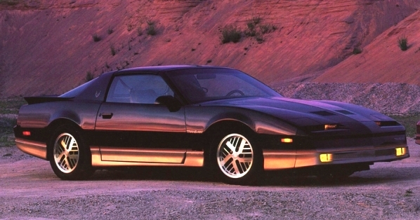
1987-es Firebird Formula
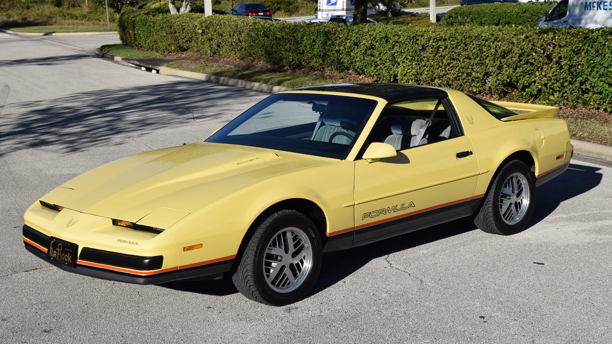
1989-es 20. évfordulós Turbo Trans Am
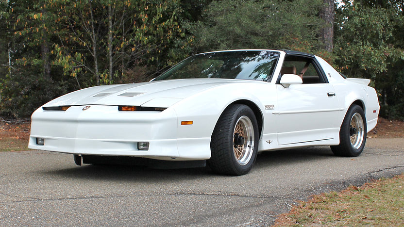
1991-es Firebird
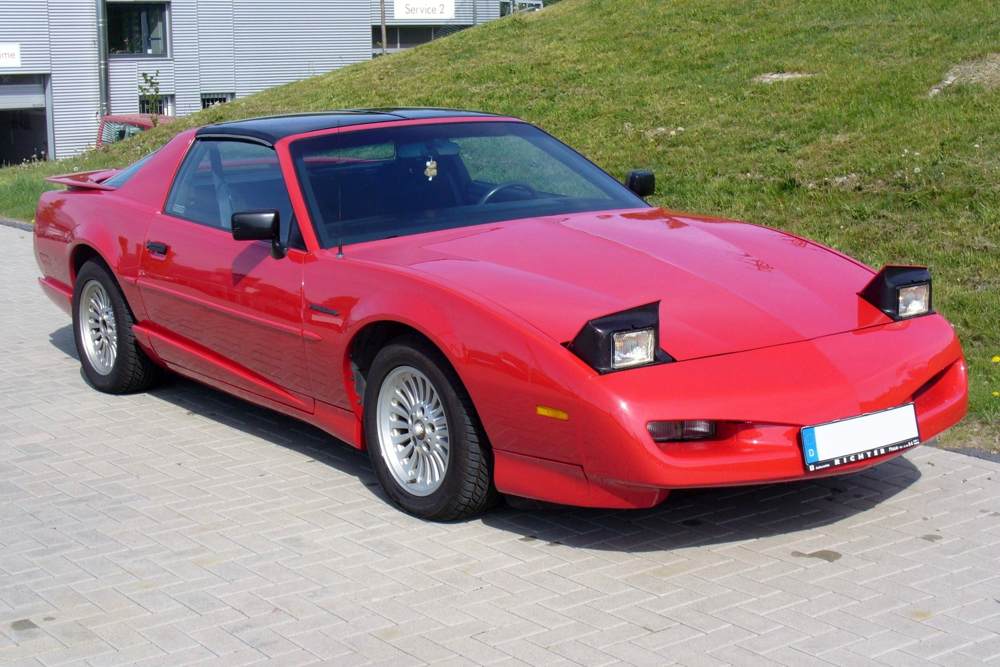
1991-es Trans Am
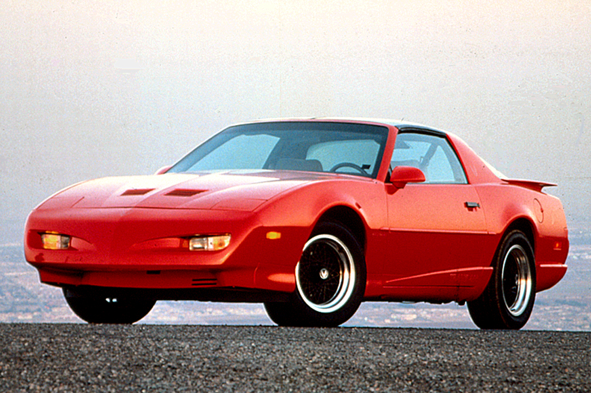
1991-es Firehawk
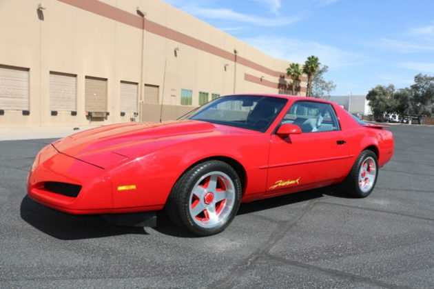